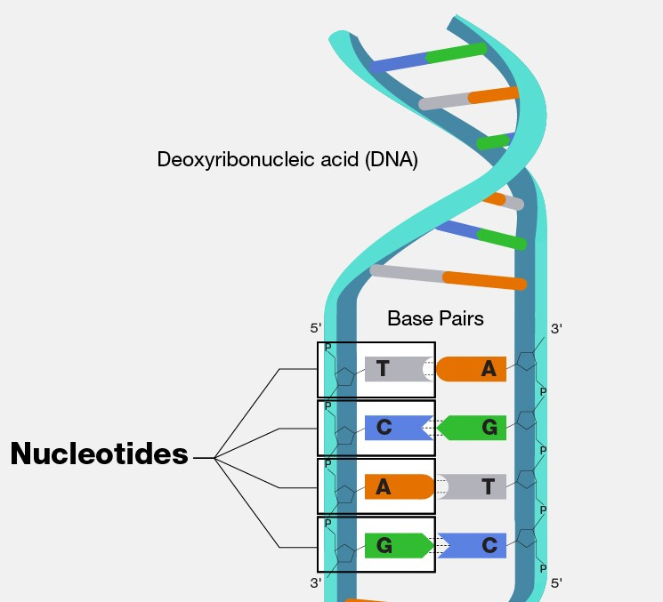

Sampling & Sampling Distributions
Sampling refers to the drawing of a subset of data points from some larger set (population). How we sample can be the subject of an entire course, but it is helpful to know enough to perform sampling in R, and then to compile those samples together into a sampling distribution.
Common Distributions
Before we go any further, let's remind ourselves of the shapes and names of some of the common distributions that we'll want to have fresh in our minds for this section. As another reminder, we need to be conscious as to whether we're dealing with a continuous distribution or a discrete distribution. Here's a visual to remind us of this:
Random vs. Pseudorandom
We often think of computers as being able to generate for us random samples of numbers. However, computer-generated random samples are never truly random, they are what is called pseudorandom. For a computer to sample a truly random number, they would need to use a true random number generator (TRNG), which relies on using some external physical variable such as airwave static to generate a truly random sample, since subatomic particles have truly random behaviour.
Computers on their own have to approximate this with an algorithm. The methods that we use to do this are not important in this context, but it is a good thing to remember that computationally derived random numbers (as we usually get from R) are not actually the same as mathematically random numbers, as the mathematical definitions used to define randomness in the purest sense are not computationally employable.
So, in R, we will use pseudorandom number generators when we want to sample some numbers.
Random Sampling
So when we want to sample some set of numbers, we have to usually define what kind of distribution we want to draw from. When we ask R to randomly sample a number for us, we need to at least provide it with some guidelines about what kind of number we want. Do we want only integers? Decimals? If so, how many significant digits? What are the limits?
The way we would typically think about sampling in our brains is similar to the example of having a set of balls in a bag, all labeled with a unique number from 1-10. Assuming all else about the balls is equal, we could guess that there would be an equal probability we would draw any given ball from the bag. While this feels intuitive, this is actually thinking in distributions! We have actually just stated that we believe the distribution we are sampling from is uniform, that is, that all possible values have the same probability of being chosen.
Contrast that with something like a Normal (Gaussian) distribution, and we will be more likely to select a value that lands closer to the center of the distribution, at the mean.
Random Sampling in R
It's actually quite easy to perform random sampling in R, given that it's a statistical programming language, the basic version of R that comes installed contains the stats package which includes random sampling function for a variety of distributions. Let's use an example with the normal distribution. Since the normal distribution takes two parameters, 1) a mean, and 2) a standard deviation, we need to provide those two parameters to the function, along with the number of samples we'd like to draw.
stats::rnorm(n = 10, mean = 5, sd = 1.5)
## [1] 4.476135 5.335225 3.845416 6.750420 7.277987 4.753633 5.847443 3.398002 4.856019 4.589032
And we see R has selected our values for us. Often we want to be able to plot the distribution of values that we've sampled. That's most easily done as a simple histogram, using the hist() function which is in the graphics package:
And we see we've approximated a normal distribution here.
Seeds and Reproducibility
When doing random number generation in R, it stands to reason that given how R goes about it's random number generation, if I write the above code to sample 10 data points in a script, run that code, and then come back in a few days and run it again I'll get a completely different set of points the next time. We can see this in action here:
rnorm(10, mean = 0, sd = 1)
## [1] -0.50615451 -1.02004320 -0.97380896 -0.79269672 -0.78650430 -0.37790870 -0.98939547 0.40683211 ## [9] -2.10517301 0.01959228
And again:
rnorm(10, mean = 0, sd = 1)
## [1] -0.34351892 -0.06797772 -0.15076840 -0.41931138 -1.19981033 1.27169877 1.08877265 -0.07896707 ## [9] -0.14797010 0.95389526
We see these are completely different sets of numbers!
There are many situations where we might need to be able to re-run a set of random numbers and have them be the same values (e.g. debugging code, simulation studies, etc.). Well, if we recall that we actually are doing is using a pseudorandom number generator (PRNG), then we can use the concepts of seeds to help us. Whenever using a PRNG we need to "set a seed" which initializes the PRNG. The details of this aren't important here, but know that if we have a seed, we can predict what the PRNG will draw as pseudorandom numbers. Let's make an example.
Say we want to draw 100 samples from a uniform (discrete) distribution. As a reminder, a uniform distribution with bounds at 0 and 10 looks like this:
We'll explore the use of seeds by drawing 100 random samples from a uniform distribution with bounds at 0 and 10. We start by setting a seed and drawing our samples:
# start by setting a seed set.seed(1) x <- runif(n = 100, min = 0, max = 10)
Now let's draw a new set of values:
y <- runif(n = 100, min = 0, max = 10)
We can see if these values are the same by using a boolean comparison:
all(x == y)
## [1] FALSE
So the values drawn are NOT the same. But what happens if we re-employ the seed that we set previously?
set.seed(1) z <- runif(n = 100, min = 0, max = 10)
Let's check if they're equivalent:
all(x == z)
## [1] TRUE
So now we get a true! This is good to know! This means we can draw random samples in a reproducible manner, which can be incredibly useful.
Sampling Distributions
A sampling distribution refers to the probability distribution of a particular statistic that we might get from a random sample.
Discrete Sampling Distributions
Let us think back to our example in Probability 101 of a discrete sampling distribution - gene frequency. Imagine we were able to "zoom in" on some random part of our own DNA, we would see something like this:
We could imagine that the frequency of each gene may be equivalent, However, research has shown (i.e. Louie et al. (2003)) that nucleotide frequency is not uniform across human genes. So given some particular gene, it may be the case that we see a non-uniform probability distribution, but one that looks like this:
df <- data.frame( base = c("A", "C", "G", "T"), prob = c(0.1, 0.2, 0.45, 0.25) ) ggplot(data = df) + geom_col(aes(x = base, y = prob, fill = base)) + ggthemes::theme_base() + labs(x = "Nucleotide Base", y = "Probability") + ylim(c(0,1))
As a fun little game, let's build a gene. There approximately 1000 nucleotide pairs of coding sequence per gene according to google, and let's imagine that the gene we're building has a probability distribution of nucleotides that is given above, where the probabilities of each base appearing given a random sample are: 0.1, 0.2, 0.45, and 0.25 respectively for A, C, G, and T.
Using R's functionality, let's sample a variable number times from our weighted set, and see if the distribution we get from our sample matches the theoretical probabilities. We'll sample 20, 100, 1000, and 10,000 times. The Law of Large Numbers indicates that the more samples we take, the closer we'll get to our theoretical probabilities. Let's try!
To do this, we'll use R's sample() function from the base package, and alter only the size argument which says how many times to sample.
set.seed(1234) sample_20 <- sample(c("A", "C", "G", "T"), size = 20, replace = TRUE, prob = c(0.1, 0.2, 0.45, 0.25)) sample_100 <- sample(c("A", "C", "G", "T"), size = 100, replace = TRUE, prob = c(0.1, 0.2, 0.45, 0.25)) sample_1000 <- sample(c("A", "C", "G", "T"), size = 1000, replace = TRUE, prob = c(0.1, 0.2, 0.45, 0.25)) sample_10000 <- sample(c("A", "C", "G", "T"), size = 10000, replace = TRUE, prob = c(0.1, 0.2, 0.45, 0.25))
Now let's take these vectors and turn them into dataframes so we can plot them. We can use the convenient table() function to get counts of how many of each base there is:
library(dplyr) library(ggplot2) library(ggthemes) df_20 <- data.frame( # use table() table(sample_20) ) %>% # rename them to be consistent dplyr::rename( base = sample_20, prob = Freq ) %>% dplyr::rowwise() %>% dplyr::mutate( # add column to tell us how many samples were drawn sample = "20", # turn value from a count to a probability prob = prob/20 ) df_100 <- data.frame( # use table() table(sample_100) ) %>% # rename them to be consistent dplyr::rename( base = sample_100, prob = Freq ) %>% dplyr::rowwise() %>% dplyr::mutate( # add column to tell us how many samples were drawn sample = "100", # turn value from a count to a probability prob = prob/100 ) df_1000 <- data.frame( # use table() table(sample_1000) ) %>% # rename them to be consistent dplyr::rename( base = sample_1000, prob = Freq ) %>% dplyr::rowwise() %>% dplyr::mutate( # add column to tell us how many samples were drawn sample = "1000", # turn value from a count to a probability prob = prob/1000 ) df_10000 <- data.frame( # use table() table(sample_10000) ) %>% # rename them to be consistent dplyr::rename( base = sample_10000, prob = Freq ) %>% dplyr::rowwise() %>% dplyr::mutate( # add column to tell us how many samples were drawn sample = "10000", # turn value from a count to a probability prob = prob/10000 )
Now we'll combine all these data frames into one, add a reference of the real values, and plot the result with a grouped bar chart:
# join samples up df_all_samples <- rbind( df_20, df_100, df_1000, df_10000 ) %>% # add in a column to denote these are sampled not theoretical dplyr::mutate( type = "sampled" ) df_real <- data.frame( base = c("A", "C", "G", "T"), prob = c(0.1, 0.2, 0.45, 0.25), sample = "Real values", type = "theoretical" ) # join the dataframes again df_all <- rbind( df_all_samples %>% dplyr::mutate( sample = as.character(sample) ), df_real ) # plot the result ggplot() + geom_bar(data = df_all, mapping = aes(x = base, y = prob, alpha = type, fill = sample, colour = type), position = "dodge", stat = "identity") + ggthemes::theme_base() + scale_fill_manual( "Sample Size", values = wesanderson::wes_palette("Rushmore1", n = 5)) + scale_alpha_manual("Theoretical or Sampled", values = c(0.5, 1)) + scale_colour_manual("Theoretical or Sampled", values = c("white", "black"))
Here we have shown intuitively the Law of Large Numbers!!!!
Continuous Sampling Distributions
Consider records for aquatic vertebrates (cutthroat trout and salamanders) in Mack Creek, Andrews Experimental Forest, Oregon (1987 - present). This dataset is present in the lterdatasampler package.
library(lterdatasampler) df <- lterdatasampler::and_vertebrates head(df)
## # A tibble: 6 × 16 ## year sitecode section reach pass unitnum unitt…¹ vert_…² pitnu…³ species lengt…⁴ lengt…⁵ weigh…⁶ ## <dbl> <chr> <chr> <chr> <dbl> <dbl> <chr> <dbl> <dbl> <chr> <dbl> <dbl> <dbl> ## 1 1987 MACKCC-L CC L 1 1 R 1 NA Cutthr… 58 NA 1.75 ## 2 1987 MACKCC-L CC L 1 1 R 2 NA Cutthr… 61 NA 1.95 ## 3 1987 MACKCC-L CC L 1 1 R 3 NA Cutthr… 89 NA 5.6 ## 4 1987 MACKCC-L CC L 1 1 R 4 NA Cutthr… 58 NA 2.15 ## 5 1987 MACKCC-L CC L 1 1 R 5 NA Cutthr… 93 NA 6.9 ## 6 1987 MACKCC-L CC L 1 1 R 6 NA Cutthr… 86 NA 5.9 ## # … with 3 more variables: clip <chr>, sampledate <date>, notes <chr>, and abbreviated variable ## # names ¹unittype, ²vert_index, ³pitnumber, ⁴length_1_mm, ⁵length_2_mm, ⁶weight_g
Let us look at the distribution of cutthroat trout sizes in our database:
hist(df$length_1_mm)
We can see that this distribution isn't quite normal, but is continuous, and right-skewed. It could be approximated by a log-normal distribution:
x <- seq(0, 250) y <- dlnorm(x, meanlog = 4.1, sdlog = 0.4) # figure out how to scale the y for the plot alone scale_factor <- 5000 / 0.01780701 y <- y * scale_factor dist_df <- data.frame(x, y) ggplot() + geom_histogram(df, mapping = aes(x = length_1_mm), colour = "grey20", fill = "lightblue") + geom_line(dist_df, mapping = aes(x = x, y = y), colour = "red", linetype = "dashed", size = 2) + ggthemes::theme_base() + labs(x = "Cutthroat Trout Length (mm)", y = "Density")
## Warning: Removed 17 rows containing non-finite values (stat_bin).
What we are doing here is constructing a sampling distribution. We can do this by randomly drawing samples from our population (in this example, every fish in our data set is the "population"), then calculating the mean for each random sample.
As we discuss in the programming concepts section on pseudocoding, let's think about how to accomplish this before we start blindly writing code. There are steps to our process here:
- 1. Determine how many random samples to draw (let's call this n)
- 1.1 - How many observations in each sample (let's call this x)?
- 1. 2. - Pre-allocate an object to hold n number of sample means
- 2. Draw a sample
- 2. 1. - Pull out x number of observations
- 2. 2. - Calculate the mean
- 2. 3. - Store that mean in the corresponding location of the pre-allocated object
- 3. Repeat step 2 n times
The easiest way to actually accomplish this is through a for-loop. We'll start this and do it in order:
# first, we'll draw 100 samples n <- 100 # let's pull 10 observations in each sample x <- 10 # preallocate object to hold sample means sample_means <- vector(mode = "numeric", length = n)
So how would we perform step 2? We'd sample 10 values from df$length_1_mm, calculate the mean, and assign the mean value to sample_means[n]. Then, we simply repeat this n times. Here's that code:
# first, sample randomly from the vector of value for(i in 1:n) { sample_means[i] <- mean(sample(df$length_1_mm, size = x, replace = FALSE)) } head(sample_means)
## [1] 80.5 79.2 63.6 82.3 73.6 59.9
Okay, so this worked! Excellent. Now, let's plot a histogram of our results:
hist(sample_means)
Hmm!! A confusing distribution. This doesn't really resemble any interesting or meaningful distribution. Let's try the process again, but with a much larger value of n, and see if that changes the result:
n <- 100000 x <- 10 sample_means <- vector(mode = "numeric", length = n) for(i in 1:n) { sample_means[i] <- mean(sample(df$length_1_mm, size = x, replace = FALSE)) } hist(sample_means)
Wow! This distribution is remarkably normal! What's going on here????
We have just stumbled upon the
Central Limit Theorem
The Central Limit Theorem is an incredibly important theorem that states the following:
Taking a population with some mean and a standard deviation , we can sample from the population (with replacement), and with a number of samples that is sufficiently large, the distribution of the sample means will be normally distributed.
We have just demonstrated this above with our cutthroat trout example. This is a surprisingly important stated theorem, because it provides us a path forward to work with statistical tests that assume normal distributions. As you will learn as you move further through your statistical training, normality of data makes our lives infinitely easier.
I strongly recommend that if you care to learn more about statistics, to think deeply about the central limit theorem, and try to come up your own intuitive understanding of why it is true. There are many excellent descriptions of proofs of the central limit theorem. For the advanced and interested student, there's an excellent recorded lecture by John Tsitsiklis at MIT that goes into detail on this theorem and why it is central not only to inferential statistics but how it links statistics to calculus.
Law of Large Numbers
In the example we gave on discrete sampling distributions, we have already discovered what this "law" purports. Essentially, it states that if you repeat an experiment some number, n, of times and average the result, as n gets larger, the averaged result will get closer and closer to the expected value.
We saw this in our example, as the sampling option with 10,000 samples was the closest one to the expected value. We could deduce a short proof for this, but that's beyond the scope of this short piece.
What is an important takeaway is that this law says something valuable to us about what we need to keep in mind when we deal with small numbers. That is, the smaller the sample size at hand, the further we are from actually getting a representative sample of the population. While this may seem intuitive, it's helpful to understand that there is a provable way to understand this concept (We can also think about this as it relates to statistical power.)
The EEB R Manual is the work of researchers at the University of the Toronto
and intended as a purely educational resource. It holds no official
association with the R Foundation. It should not be taken as an
authority on R best practices.
When using this resource,
This content is reviewed regularly for errors and to make improvements, if you see an error and want to help us make this better, see the Contact Page